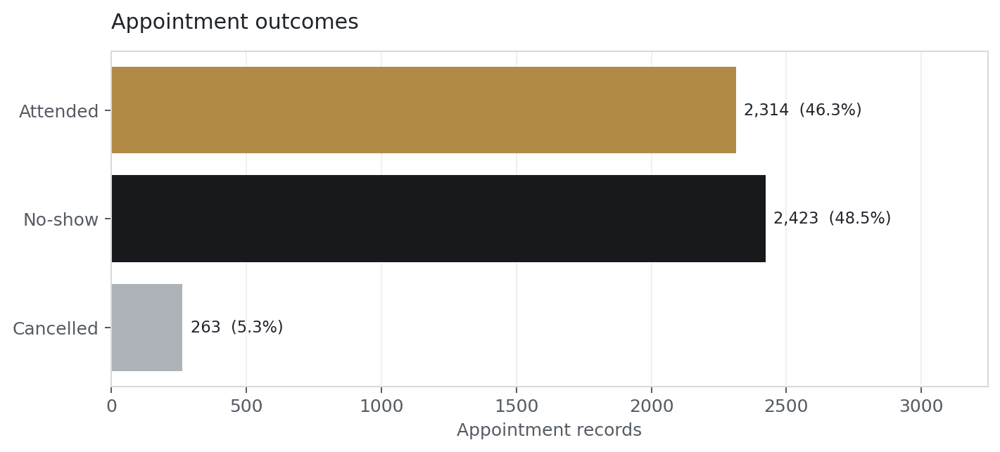
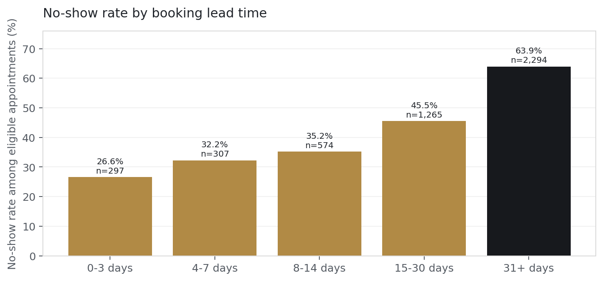
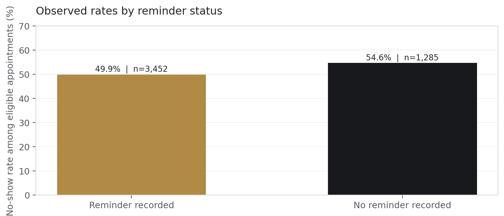
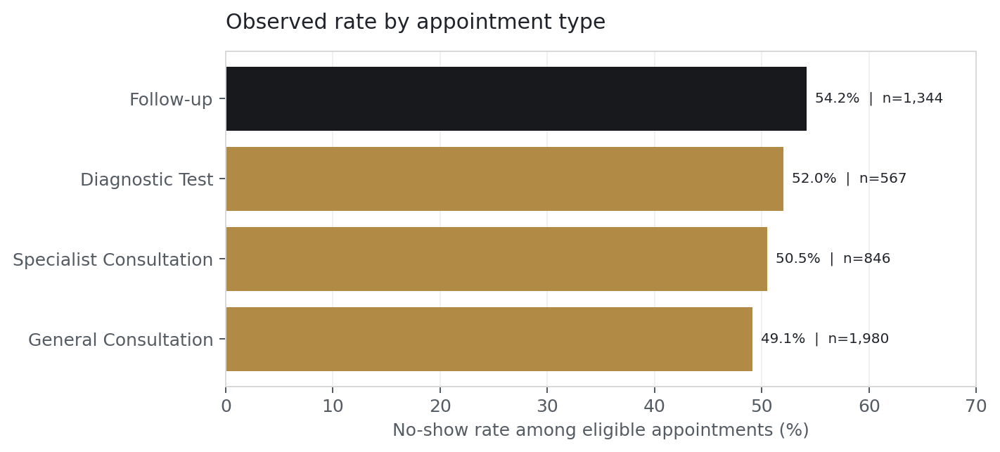

What the data shows
Among 4,737 eligible appointments, 51.2% were no-shows. Observed no-show rates range from 26.6% for bookings 0–3 days ahead to 63.9% for 31+ days.
These patterns motivate a prospective test of supportive confirmation timing. They do not establish attendance improvement.
Appointment outcomes

Eligible appointments = Attended + No-Show. A no-show is not a completed visit. Cancellations are reported separately.
Booking lead time

Descriptive association in fictional records; longer lead time is not established as a cause.
Recorded reminders

Reminder timing, assignment and delivery are uncontrolled. This comparison does not measure effectiveness.
Appointment type

Segment counts describe service mix; differences do not justify punitive treatment.
KPI definitions
| Metric | Definition | Value |
|---|---|---|
| Appointment records | All source rows | 5,000 |
| Distinct patients | Distinct anonymized patient identifiers | 1,696 |
| Eligible appointments | Attended + No-Show | 4,737 |
| Attendance rate | Attended / (Attended + No-Show) | 48.8% |
| No-show rate | No-Show / (Attended + No-Show) | 51.2% |
| Cancellation rate | Cancelled / all appointment records | 5.3% |
| Reminder coverage | Reminder Sent = Yes / all appointment records | 72.7% |
How this connects to the model
The model uses booking-known scheduling and demographic inputs. Reminder activity and waiting time remain descriptive fields, excluded from prediction because their timing is unverified. The analytics and model share the same source and target definition; this dashboard does not run live inference.
See validation evidence and the complete project. No human partner approval, deployment or intervention benefit is claimed.